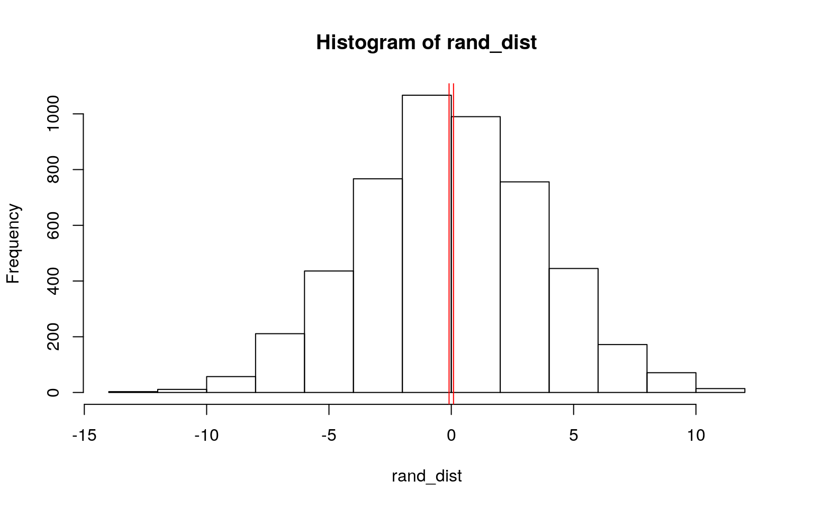
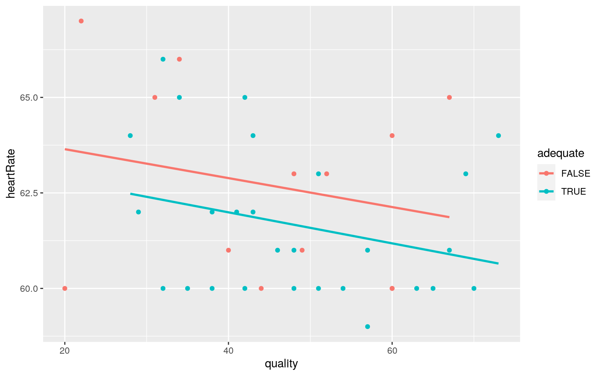
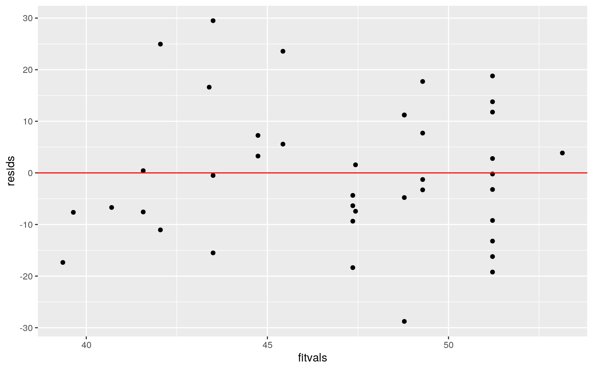
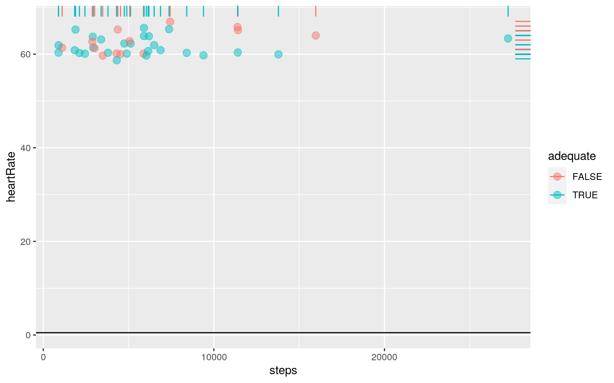
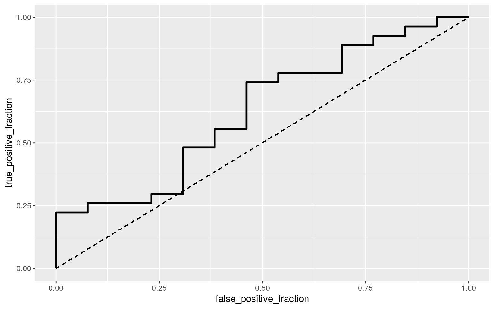

library(ggplot2)
library(lmtest)
library(plotROC)
library(glmnet)
library(sandwich)
library(dplyr)
library(tidyverse)library("readxl")
df <- read_excel("sleepdata.xlsx")
head(df)## # A tibble: 6 x 8
## Start End `Sleep quality … minutes `Time in Bed (hrs)`
`>7 hours`
## <dttm> <dttm> <dbl> <dbl> <dttm> <lgl>
## 1 2021-05-03 22:38:00 2021-05-04 06:16:00 51 458
1899-12-31 07:38:00 TRUE
## 2 2021-05-02 22:29:00 2021-05-03 06:35:00 57 486
1899-12-31 08:06:00 TRUE
## 3 2021-05-01 23:19:00 2021-05-02 06:25:00 34 426
1899-12-31 07:06:00 TRUE
## 4 2021-04-30 22:17:00 2021-05-01 06:27:00 73 490
1899-12-31 08:10:00 TRUE
## 5 2021-04-29 20:32:00 2021-04-30 06:45:00 51 613
1899-12-31 10:13:00 TRUE
## 6 2021-04-28 21:26:00 2021-04-29 07:16:00 63 590
1899-12-31 09:50:00 TRUE
## # … with 2 more variables: `Heart Rate` <dbl>, `Activity
(steps)` <dbl>names(df) <- c("startTime", "endTime", "quality", "minutes", "hours","adequate","heartRate", "steps")
class_diag<-function(probs,truth){
tab<-table(factor(probs>.5,levels=c("FALSE","TRUE")),truth)
acc=sum(diag(tab))/sum(tab)
sens=tab[2,2]/colSums(tab)[2]
spec=tab[1,1]/colSums(tab)[1]
ppv=tab[2,2]/rowSums(tab)[2]
if(is.numeric(truth)==FALSE & is.logical(truth)==FALSE) truth<-as.numeric(truth)-1
#CALCULATE EXACT AUC
ord<-order(probs, decreasing=TRUE)
probs <- probs[ord]; truth <- truth[ord]
TPR=cumsum(truth)/max(1,sum(truth))
FPR=cumsum(!truth)/max(1,sum(!truth))
dup<-c(probs[-1]>=probs[-length(probs)], FALSE)
TPR<-c(0,TPR[!dup],1); FPR<-c(0,FPR[!dup],1)
n <- length(TPR)
auc<- sum( ((TPR[-1]+TPR[-n])/2) * (FPR[-1]-FPR[-n]) )
data.frame(acc,sens,spec,ppv,auc)
}Sleep Cycle is an intelligent alarm clock designed to gently wake you up while you’re in your lightest sleep phase. It’s smart technology analyzes sleep patterns while detecting snoring, sleep talking, coughing and other sounds providing detailed sleep statistics, daily sleep graphs and can sync with other phone apps to track activity levels. I have exported my own data from the app for the purposes of this project to analyze my sleep patterns over the last few months. Variables in this dataset include sleep (start) and wake (end) times, sleep duration in hours and minutes as well as sleep quality (%), which has been calculated by variables some of which we do not have access to including amount of time spent in bed, amount of time spent in deep sleep, the frequency of motion and intensity for each movement and the amount of times where the app registered you as fully awake. Additional variables included in this dataset include if sleep duration was over 7hrs (>7hr=TRUE; <7hrs=FALSE), heart rate taken each morning (heartRate), and daily step counted by the health app in my iPhone (activity). There are 40 total observations in this dataset
library(rstatix)
group<-df$adequate
DVs <- df %>% select(quality, heartRate, steps)
man1 <- manova(cbind(quality, heartRate, steps) ~ adequate, data = df)
summary(man1)## Df Pillai approx F num Df den Df Pr(>F)
## adequate 1 0.051939 0.65741 3 36 0.5836
## Residuals 38df%>%group_by(adequate)%>%summarize(mean(quality),mean(minutes),mean(heartRate),mean(steps))## # A tibble: 2 x 5
## adequate `mean(quality)` `mean(minutes)`
`mean(heartRate)` `mean(steps)`
## <lgl> <dbl> <dbl> <dbl> <dbl>
## 1 FALSE 45.2 360. 62.7 6217.
## 2 TRUE 48 518. 61.7 6050.0.05/1## [1] 0.05Assumptions of both normality and homogeneity of covariance were violated. A one-way MANOVA was conducted to determine the effect of the receiving adequate sleep (>7hours) on 3 dependent variables: quality of sleep (%), waking heart rate (bpm), and daily activity (steps). No significant differences were found of any of the dependent variables on sleep duration (>7hrs=TRUE; <7hrs=FALSE) F(3, 36) = 0.65 p < 0.5836. Therefore, univariate ANOVA to determine significance for each dependent variable was not appropriate. Overall Type I error rate is kept at alpha = 0.05.
adequate<-c(51,57,34,73,51,63,32,32,70,46,48,69,41,28,42,43,29,67,48,35,42,38,57,54,38,65,43)
insufficient<-c(60,60,67,44,40,48,69,41,28,42,43,29,67,48,35,42,38,57,54,38,65,43)
data<-data.frame(condition=c(rep("adequate",27),rep("insufficient",22)),quality=c(adequate,insufficient))
head(data)## condition quality
## 1 adequate 51
## 2 adequate 57
## 3 adequate 34
## 4 adequate 73
## 5 adequate 51
## 6 adequate 63data%>%group_by(condition)%>%
summarize(means=mean(quality))%>%summarize(`mean_diff`=diff(means)) ## # A tibble: 1 x 1
## mean_diff
## <dbl>
## 1 0.0909rand_dist<-vector()
for(i in 1:5000){
new<-data.frame(quality=sample(data$quality),condition=data$condition)
rand_dist[i]<-mean(new[new$condition=="adequate",]$quality)-
mean(new[new$condition=="insufficient",]$quality)}
{hist(rand_dist); abline(v = c(-0.0909, 0.0909),col="red")}
mean(rand_dist>0.09 | rand_dist< -0.09)## [1] 0.983We want to know if there is an association between having adequate sleep duration (>7hrs) and the quality sleep, so we compute a test statistic. Because the variables are categorical (sleep duration >7hr; TRUE vs. FALSE) vs. numeric (sleep score, %) we will compute mean difference. The null hypothesis is that sleep quality is the same for nights when I got >7hours sleep vs. <7 hrs. The alternative hypothesis is that sleep quality is different for night when I got >7hrs of sleep vs. <7hr. Independent samples t-test for comparison; p-value is not significant (p=0.98), sleep quality is not significantly different between nights of more or less than 7hours or sleep
#center numeric
df$steps_c <- df$steps - mean(df$steps)
df$heartRate_c <- df$heartRate - mean(df$heartRate)
#linear regression
fit<-lm(quality~ adequate + heartRate_c + adequate*heartRate_c, data=df)
summary(fit)##
## Call:
## lm(formula = quality ~ adequate + heartRate_c + adequate
* heartRate_c,
## data = df)
##
## Residuals:
## Min 1Q Median 3Q Max
## -28.7796 -8.0357 -0.8929 8.5908 29.5000
##
## Coefficients:
## Estimate Std. Error t value Pr(>|t|)
## (Intercept) 46.0862 3.9867 11.560 1.13e-13 ***
## adequateTRUE 1.2710 4.8155 0.264 0.793
## heartRate_c -1.3467 1.5778 -0.854 0.399
## adequateTRUE:heartRate_c -0.5819 2.1070 -0.276 0.784
## ---
## Signif. codes: 0 '***' 0.001 '**' 0.01 '*' 0.05 '.' 0.1
' ' 1
##
## Residual standard error: 13.82 on 36 degrees of freedom
## Multiple R-squared: 0.07711, Adjusted R-squared:
0.0001985
## F-statistic: 1.003 on 3 and 36 DF, p-value: 0.4028#plot regression
df%>%ggplot(aes(quality,heartRate, color=adequate))+geom_point()+geom_smooth(method = 'lm',se=F)
#assumptions
resids<-fit$residuals; fitvals<-fit$fitted.value
ggplot()+geom_point(aes(fitvals,resids))+geom_hline(yintercept=0, col="red")
bptest(fit)##
## studentized Breusch-Pagan test
##
## data: fit
## BP = 0.59445, df = 3, p-value = 0.8977ks.test(resids, "pnorm", sd=sd(resids)) #normality ##
## One-sample Kolmogorov-Smirnov test
##
## data: resids
## D = 0.070612, p-value = 0.9884
## alternative hypothesis: two-sidedcoeftest(fit, vcov = vcovHC(fit,type="HC1"))##
## t test of coefficients:
##
## Estimate Std. Error t value Pr(>|t|)
## (Intercept) 46.08617 4.24072 10.8675 6.426e-13 ***
## adequateTRUE 1.27097 4.99846 0.2543 0.8007
## heartRate_c -1.34669 1.87673 -0.7176 0.4777
## adequateTRUE:heartRate_c -0.58188 2.25677 -0.2578 0.7980
## ---
## Signif. codes: 0 '***' 0.001 '**' 0.01 '*' 0.05 '.' 0.1
' ' 1Intercept: 46.08 is mean/predicted quality of sleep for nights I slept more than 7 hours. For every 1 unit increase in waking heart rate, quality of sleep decreased by 1.34%. The slope for heart rate on nights I slept 7 or more hours is 0.582 less than for nights I slept less than 7 hours. However, none of these coefficients were significant predictors of sleep quality. After recomputing the regression with robust standard errors we see the conclusions remain similar with no significance found between the predictors and outcome.
lm(quality~ adequate + heartRate_c + adequate*heartRate_c, data=df) %>% summary##
## Call:
## lm(formula = quality ~ adequate + heartRate_c + adequate
* heartRate_c,
## data = df)
##
## Residuals:
## Min 1Q Median 3Q Max
## -28.7796 -8.0357 -0.8929 8.5908 29.5000
##
## Coefficients:
## Estimate Std. Error t value Pr(>|t|)
## (Intercept) 46.0862 3.9867 11.560 1.13e-13 ***
## adequateTRUE 1.2710 4.8155 0.264 0.793
## heartRate_c -1.3467 1.5778 -0.854 0.399
## adequateTRUE:heartRate_c -0.5819 2.1070 -0.276 0.784
## ---
## Signif. codes: 0 '***' 0.001 '**' 0.01 '*' 0.05 '.' 0.1
' ' 1
##
## Residual standard error: 13.82 on 36 degrees of freedom
## Multiple R-squared: 0.07711, Adjusted R-squared:
0.0001985
## F-statistic: 1.003 on 3 and 36 DF, p-value: 0.4028fit<-lm(quality~ adequate + heartRate_c + adequate*heartRate_c, data=df)
resids<-fit$residuals
fitted<-fit$fitted.values
resid_resamp<-replicate(5000,{
new_resids<-sample(resids,replace=TRUE)
newdat<-df
newdat$new_y<-fitted+new_resids
fit<-lm(new_y ~ adequate + heartRate_c + adequate*heartRate_c, data = newdat)
coef(fit)
})
resid_resamp%>%t%>%as.data.frame%>%summarize_all(sd)## (Intercept) adequateTRUE heartRate_c
adequateTRUE:heartRate_c
## 1 3.763668 4.523248 1.49351 1.994219resid_resamp%>%t%>%as.data.frame%>%gather%>%group_by(key)%>%
summarize(lower=quantile(value,.025), upper=quantile(value,.975))## # A tibble: 4 x 3
## key lower upper
## <chr> <dbl> <dbl>
## 1 (Intercept) 38.9 53.8
## 2 adequateTRUE -7.81 10.1
## 3 adequateTRUE:heartRate_c -4.50 3.40
## 4 heartRate_c -4.23 1.57Bootstrapped SEs were computed by residuals. Overall, all SEs decreased slightly from the original regression model. However, p-values remained non-significant.
logfit<- glm(adequate ~ steps + heartRate, data=df, family="binomial")
coeftest(logfit)##
## z test of coefficients:
##
## Estimate Std. Error z value Pr(>|z|)
## (Intercept) 1.4755e+01 1.0053e+01 1.4677 0.1422
## steps 1.3962e-05 7.3202e-05 0.1907 0.8487
## heartRate -2.2699e-01 1.6266e-01 -1.3955 0.1629exp(coeftest(logfit))##
## z test of coefficients:
##
## Estimate Std. Error z value Pr(>|z|)
## (Intercept) 2.5581e+06 2.3228e+04 4.3392 1.153
## steps 1.0000e+00 1.0001e+00 1.2101 2.337
## heartRate 7.9693e-01 1.1766e+00 0.2477 1.177prob<-predict(logfit,type="response")
table(predict=as.numeric(prob>.5),truth=df$adequate)%>%addmargins## truth
## predict FALSE TRUE Sum
## 0 2 1 3
## 1 11 26 37
## Sum 13 27 40class_diag(prob,df$adequate)## acc sens spec ppv auc
## TRUE 0.7 0.962963 0.1538462 0.7027027 0.6267806ggplot(df, aes(steps,heartRate))+geom_jitter(aes(color=adequate),alpha=.5,size=3)+
geom_rug(aes(color=adequate),sides="right")+geom_hline(yintercept=.5)
library(plotROC)
ROCplot<-ggplot(df)+geom_roc(aes(d=adequate,m=prob), n.cuts=0)+
geom_segment(aes(x=0,xend=1,y=0,yend=1),lty=2)
ROCplot
calc_auc(ROCplot)## PANEL group AUC
## 1 1 -1 0.6267806The logistic regression model shows when controlling for the waking heart rate the effect of steps taken during the day does not have a significant effect on whether or I was getting adequate sleep. This model has high sensitivity (0.96), good accuracy (0.7), good precision (0.7), but very poor specificity(0.153). Overall the model does a poor job of predicting (auc=0.626). The ROC curve reported a fair AUC 0.73`
lassodat<- df %>% select(quality, minutes, adequate, heartRate, steps)
logfit2<- glm(adequate~., data = lassodat, family="binomial")
summary(logfit2)##
## Call:
## glm(formula = adequate ~ ., family = "binomial", data =
lassodat)
##
## Deviance Residuals:
## Min 1Q Median 3Q Max
## -6.478e-05 -2.100e-08 2.100e-08 2.100e-08 5.782e-05
##
## Coefficients:
## Estimate Std. Error z value Pr(>|z|)
## (Intercept) -1.150e+03 8.618e+05 -0.001 0.999
## quality 2.552e-01 1.137e+03 0.000 1.000
## minutes 2.670e+00 1.072e+03 0.002 0.998
## heartRate 1.842e-01 8.882e+03 0.000 1.000
## steps 1.569e-03 2.511e+00 0.001 1.000
##
## (Dispersion parameter for binomial family taken to be 1)
##
## Null deviance: 5.0446e+01 on 39 degrees of freedom
## Residual deviance: 1.2299e-08 on 35 degrees of freedom
## AIC: 10
##
## Number of Fisher Scoring iterations: 25lassodat$y<-ifelse(lassodat$adequate==1,1,0)
lassodat$prob<-predict(logfit2,type="response")
table(predict=as.numeric(lassodat$prob>.5),truth=lassodat$y)%>%addmargins## truth
## predict 0 1 Sum
## 0 13 0 13
## 1 0 27 27
## Sum 13 27 40class_diag(prob,lassodat$y)## acc sens spec ppv auc
## 1 0.7 0.962963 0.1538462 0.7027027 0.6267806set.seed(1234)
k=10
data<-lassodat[sample(nrow(lassodat)),]
folds<-cut(seq(1:nrow(lassodat)),breaks=k,labels=F)
diags<-NULL
for(i in 1:k){
train<-data[folds!=i,]
test<-data[folds==i,]
truth<-test$y
fit<-glm(adequate~., data = lassodat, family="binomial")
probs<-predict(logfit2,newdata = test,type="response")
diags<-rbind(diags,class_diag(prob,lassodat$y))
}
summarize_all(diags,mean)## acc sens spec ppv auc
## 1 0.7 0.962963 0.1538462 0.7027027 0.6267806y<-as.matrix(lassodat$adequate)
x<-model.matrix(adequate~., data = lassodat)[,-1]
head(x)## quality minutes heartRate steps y prob
## 1 51 458 60 896 1 1
## 2 57 486 61 2929 1 1
## 3 34 426 65 7375 1 1
## 4 73 490 64 6192 1 1
## 5 51 613 63 3392 1 1
## 6 63 590 60 4895 1 1x<- scale(x) #good idea to standardize
cv <- cv.glmnet(x,y, family = "binomial")
cv<-cv.glmnet(x,y,family="binomial")
lasso<-glmnet(x,y,family="binomial",lambda=cv$lambda.1se)
coef(lasso)## 7 x 1 sparse Matrix of class "dgCMatrix"
## s0
## (Intercept) 2.942786
## quality .
## minutes .
## heartRate .
## steps .
## y 6.985306
## prob .This model has high sensitivity (0.96), good accuracy (0.7), good precision (0.7), but very poor specificity(0.153). Overall the model does a poor job of predicting (auc=0.626). No variables were retained when performing a lasso on the model. Therefore it is not appropriate to perform any additional lasso on the variables selected from the first lasso- no further analysis necessary.